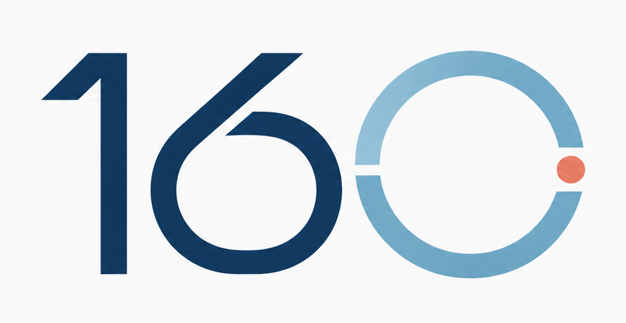

细胞会积累压力。
衰老研究关注 DNA 损伤、蛋白质稳态、线粒体功能、端粒生物学等随时间变化的细胞过程。

Go160 健康寿命研究研究视角
Go160 将长寿议题放在可衡量的机能上：行动能力、认知、代谢稳定性、免疫恢复力，以及更长期保持独立生活的能力。
衰老研究关注 DNA 损伤、蛋白质稳态、线粒体功能、端粒生物学等随时间变化的细胞过程。
衰老细胞在某些情况下有保护作用，在另一些情况下可能有害。可信表达不应把复杂生物学说得过于简单。
慢性低度炎症常出现在衰老研究讨论中，但任何干预都需要谨慎证据和临床判断。
营养、运动、睡眠、昼夜节律与线粒体健康，都与身体几十年中应对压力的能力相关。
表观遗传模式会随年龄和环境改变。它是重要研究信号，但不等于单独的“逆转生物年龄”承诺。
运动、睡眠、营养、疫苗、筛查和风险因素管理，在实验性长寿干预被研究的同时仍然是核心。
编辑标准
Go160 应区分人群证据、动物研究、早期人体研究、临床照护和消费级健康主张。这个区分会决定品牌是否足够严肃。
目标不是承诺永生，而是帮助读者理解衰老科学正在走向哪里，以及如何用恰当的谨慎态度看待相关说法。